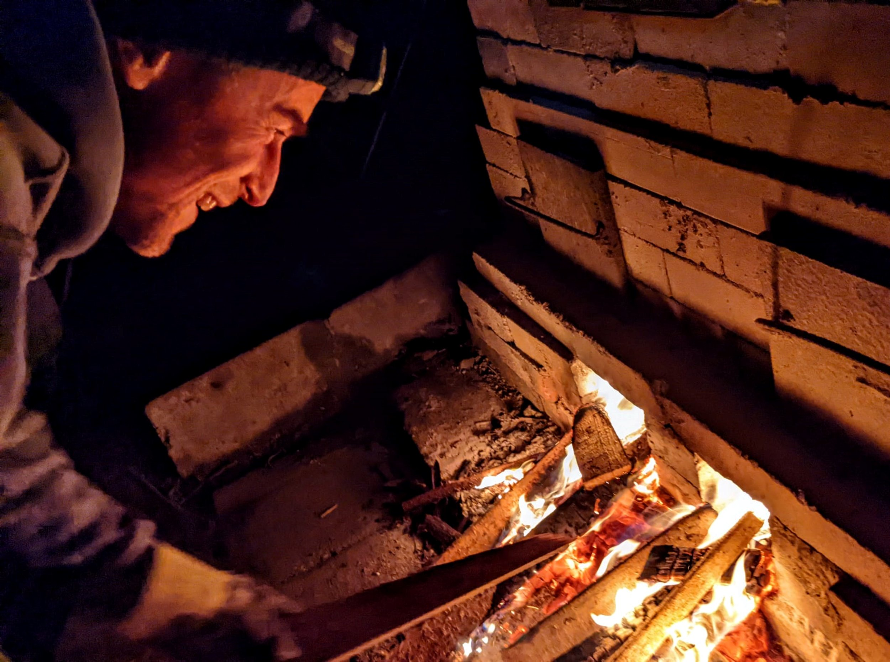
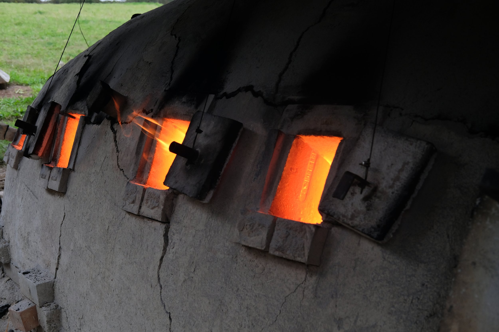
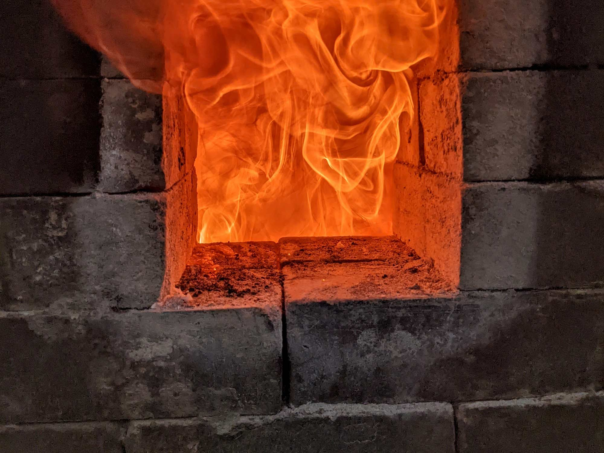
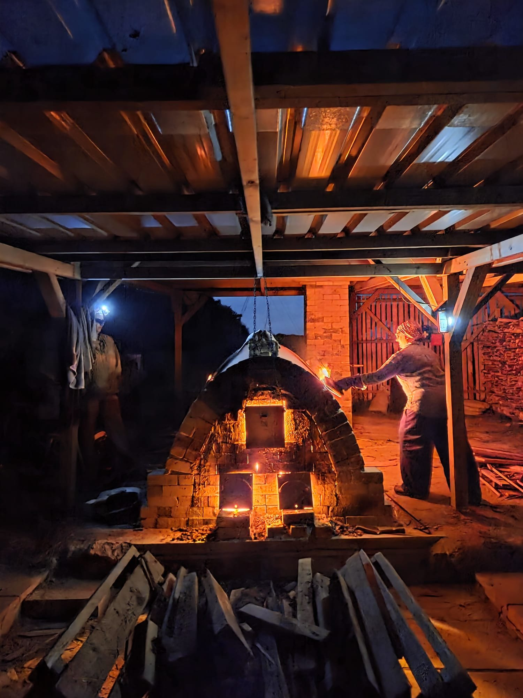

Wood-fired · Cornwall

Born and raised in Cornwall. The forms are a response to that coast, and to the kiln.
John completed a degree in ceramics at Harrow in 2001, where he became intrigued by wood-fired ceramics and kiln building. He has since built several wood-fired kilns and has been exploring the colours, surfaces and effects which can only be achieved with this process.
He develops his own clays, glazes and slips to respond to flame, ember and ash. He is fascinated by how burning wood can imprint its energy onto the clay. He aims to create vessels which intimately communicate the elemental processes that they have been through.
In 2020 he built a 140 cubic-foot anagama — a single-chamber wood kiln — at Gweek. It is fired with offcuts from a local sawmill. A firing lasts around fifty hours and needs constant attention to climb above 1,300 °C. At that heat the ash from the wood melts and becomes the glaze.
Loading an anagama is said to be the hardest part of the firing. The potter has to imagine the path of the flame as it rushes through the chamber, and use that sense to paint the pieces with fire.
Where a pot sits decides what it becomes. Near the firebox it may take a heavy coat of ash, or sit in embers. Further back it may only be touched. John packs for that path — not for evenness.



YouTube and Facebook take a search until John has a channel of his own. Instagram is live.
Week-long anagama firing at Gweek.
An introduction to the whole process: preparation, the firing itself, unloading, and looking at what the chamber has done. You bring 15–20 pots and work with five other students, so there is time to be in every stage.
The week covers clays, glazes and slips that can stand the fire; how flame, ash and embers change a surface; the rhythm of a long stoke; and how to pack so the flame can move. Two online workshops run before the week so you arrive with work that is ready for the kiln.
Places are few. Apply by email — there is no price on the public page; John will send terms.
Apply — johnmceramics@gmail.com
You can also use Enquire on this site. Film of the kiln on his own courses page is by Gareth Bromley.
These are one-off pieces from the kiln. Add a pot while you look, or mark it in the index. Quantities are a note, not a shop. Price is on request until John confirms. Repeat shapes such as cups or plates can be added here later.
Index of pots — tick a quantity to include it.
| Piece | Price | Qty |
|---|
Studio: johnmceramics@gmail.com · jmmackenzie.co.uk